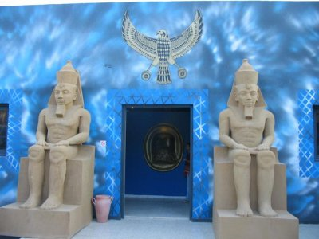
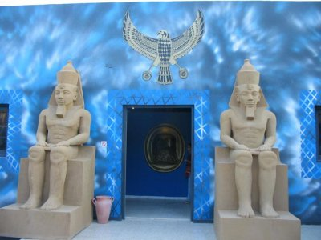

Introduction
The South of the country offers some breath-taking experiences and if you are in the mood to leap off your deckchair and engage in some adventurous activities, this could be the region for you.
Tamerza Canyon
The first suggestion is perhaps one of the most mesmeric attractions in the country. After driving for an age around the lifeless desert, you’ll suddenly stumble across the Tamerza Canyon. There is no such thing as a poor view at this attraction and despite what one may initially think in regard to this place, there are several hidden sources of water.
Lezard Rouge (Red Lezard Train)
If we switch across to Tozeu, one can visit the Lezard Rouge which can only be described as a functional antique train. The fact that it was first devised in the 19th Century yet still manages to remain in use is hugely impressive and subsequently attracts hordes of tourists. It won’t come as a surprise to hear that this experience prompts a lot of camera flashes, with the train encouraging some fantastic snaps.
Chak Wak Park
For those interested in a spot of history, a trip to Chak Wak Park should most definitely be added to the agenda. This was the brainchild of the former mayor of Tozeur and can only be described as one of the most glorious examples of history deciphered in modern form. 3D dinosaurs are the pick of the attraction, although any family who wishes to educate the kids on the Hannibal and the Carthaginian wars won’t be disappointed either.
 

About the Author

About Olivia Marsh
Olivia Marsh - Author - Professional chef and Travel enthusiast.
Culinary
Institute
of
America (CIA) graduate. Chef Marsh has traveled the globe from France, Italy,
Germany to
China, Thailand, India, Tunisia and more.
Olivia lived in Tunisia for almost 10
years
now.